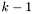

PPL Java Language Interface Documentation
0.10.2
The Parma Polyhedra Library comes equipped with an interface for the Java language. The Java interface provides access to the numerical abstractions (convex polyhedra, BD shapes, octagonal shapes, etc.) implemented by the PPL library. A general introduction to the numerical abstractions, their representation in the PPL and the operations provided by the PPL is given in the main
PPL user manual. Here we just describe those aspects that are specific to the Java interface. In the sequel,
prefix is the path prefix under which the library has been installed (typically
/usr or
/usr/local).
Overview
Here is a list of notes with general information and advice on the use of the Java interface.
- The numerical abstract domains available to the Java user as Java classes consist of the simple domains, powersets of a simple domain and products of simple domains. Note that the default configuration will only enable a subset of these domains (if you need a different set of domains, see configuration option
--enable-instantiations).
- The simple domains are:
- convex polyhedra, which consist of C_Polyhedron and NNC_Polyhedron;
- weakly relational, which consist of BD_Shape_N and Octagonal_Shape_N where N is one of the numeric types signed_char, short, int, long, long_long, mpz_class, mpq_class;
- boxes which consist of Int8_Box, Int16_Box, Int32_Box, Int64_Box, Uint8_Box, Uint16_Box, Uint32_Box, Uint64_Box, Float_Box, Double_Box, Long_Double_Box, Z_Box, Rational_Box; and
- the Grid domain.
- The powerset domains are Pointset_Powerset_S where S is a simple domain.
- The product domains consist of Direct_Product_S_T, Smash_Product_S_T and Constraints_Product_S_T where S and T are simple domains.
- In the following, any of the above numerical abstract domains is called a PPL domain and any element of a PPL domain is called a PPL object.
- The Java interface files are all installed in the directory
prefix/lib/ppl. Since this includes shared and dynamically loaded libraries, you must make your dynamic linker/loader aware of this fact. If you use a GNU/Linux system, try the commands man ld.so and man ldconfig for more information. - A Java program can create a new object for a PPL domain by using the constructors for the class corresponding to the domain.
- For a PPL object with space dimension
k, the identifiers used for the PPL variables must lie between 0 and  and correspond to the indices of the associated Cartesian axes. For example, when using methods that combine PPL polyhedra or add constraints or generators to a representation of a PPL polyhedron, the polyhedra referenced and any constraints or generators in the call should follow all the (space) dimension-compatibility rules stated in Section Representations of Convex Polyhedra of the main PPL user manual. - As explained above, a polyhedron has a fixed topology C or NNC, that is determined at the time of its initialization. All subsequent operations on the polyhedron must respect all the topological compatibility rules stated in Section Representations of Convex Polyhedra of the main PPL user manual.
- Any application using the PPL should make sure that only the intended version(s) of the library are ever used.
- When the Parma Polyhedra Library is configured, it will automatically test for the existence of the Java system (unless configuration options are passed to disable the build of the Java interface; see configuration option
--enable-interfaces). If Java is correctly installed in a standard location, things will be arranged so that the Java interface is built and installed (see configuration option --with-java if you need to specify a non-standard location for the Java system).